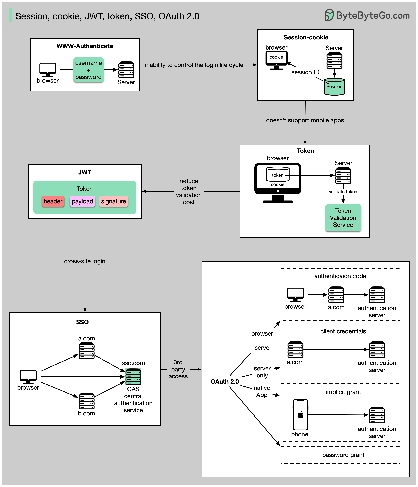

Session, cookie, JWT, token, SSO, and OAuth 2.0 - what are they?!
These terms are all related to user identity management. When you log into a website, you declare who you are (identification). Your identity is verified (authentication), and you are granted the necessary permissions (authorization). Many solutions have been proposed in the past, and the list keeps growing.
From simple to complex, here is my understanding of user identity management:
WWW-Authenticate is the most basic method. You are asked for the username and password by the browser. As a result of the inability to control the login life cycle, it is seldom used today.
A finer control over the login life cycle is session-cookie. The server maintains session storage, and the browser keeps the ID of the session. A cookie usually only works with browsers and is not mobile app friendly.
To address the compatibility issue, the token can be used. The client sends the token to the server, and the server validates the token. The downside is that the token needs to be encrypted and decrypted, which may be time-consuming.
JWT is a standard way of representing tokens. This information can be verified and trusted because it is digitally signed. Since JWT contains the signature, there is no need to save session information on the server side.
By using SSO (single sign-on), you can sign on only once and log in to multiple websites. It uses CAS (central authentication service) to maintain cross-site information
By using OAuth 2.0, you can authorize one website to access your information on another website